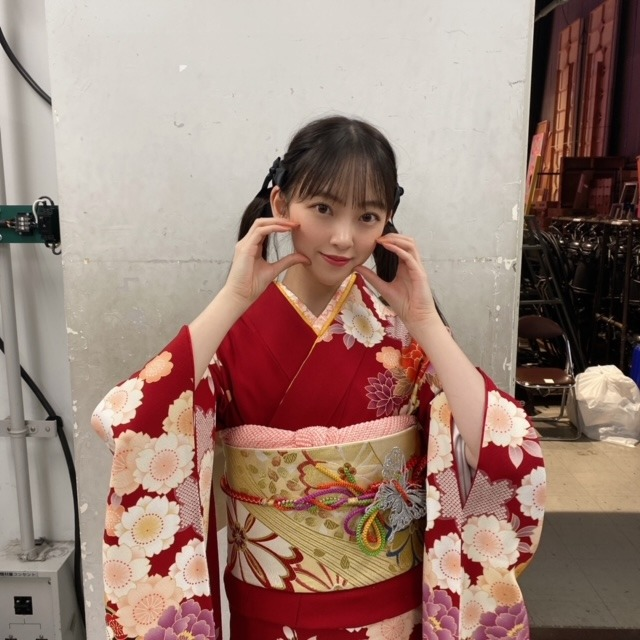
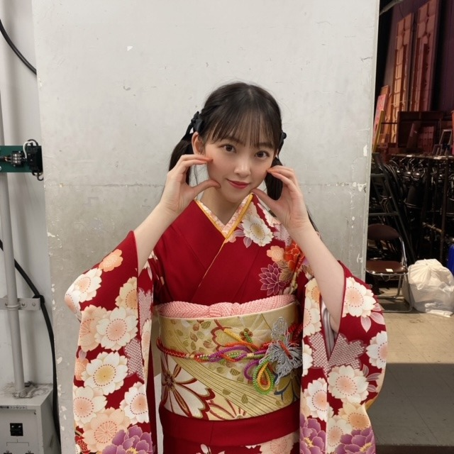

2021/0110Sun最近のマイブームはGoogle Earthで行きたい場所に行った気分になること ps.エモくないのよ全然

僕は僕を好きになる のmvが公開されました
乃木坂46としてのmv撮影はこれが最後でした
制作の方々の中では監督さんだけが
わたしの卒業を知っていたので
みなさんにちゃんとご挨拶できなかったことが
心残りです
制作に携わってくださったみなさん
ありがとうございました...届きますように
そしてまたどこかでご一緒できたら嬉しいです！
最近は優里さんのドライフラワーを
よく聴いてますが
アゲアゲなpopsongよりも
しっとりとした曲や落ち着いた曲が好きみたいです
今日の乃木坂工事中では
新年らしくお着物を着ています
2年前かな？着た時もツインをしたのですが
今回も途中から髪が邪魔でツインにしました☺︎



高めツインをするとりんごさんが必ず
かわいいってきゅるきゅるな目で
褒めてくれます笑
やりがいがあります笑
素敵なお着物を用意してくださり
ありがとうございます^ - ^
2021年は、世界中が素敵な一年になりますように
そして明日は成人の日
新成人の皆さん、おめでとうございます☺︎
気付けば成人を迎えのは4年前...
"曇り空にも雨にも負けない太陽でいたい"
そう自分の中で思ってきました
どんなものにも惑わされず、自分の道を進む
果たして自分の選択は正しいのか
そう悩む時もたくさんありました
たくさん怖くもなりました
でも、ちゃんと自分の奥底の気持ちに
耳を傾けたら正解はわかります
正しい選択ができないのは自分自身の軸が
ぶれていて、軸自体がまだ脆いのかもしれない
少しずつ、少しずつ、自分を高めて行けたら
きっといつか自分の為にも誰かの為にも
動ける日がくると思っています
わたしが大切にしている言葉
"悔しい思いをするから成長する
悔しい。はチャンス"
悔しい事があると人はなんで自分だけ、
なんて不運なんだと悲観的になります
でも私はその悔しさこそが原動力だと思っているので
よし、もっともっと頑張ろうって思えます
悔しさを人にぶつけた時点で自分の負けです
誰かを落として、不幸にしてまで自分が救われたいなんていう考え方は絶対に間違っているし、自分も幸せになりたいなら自分自身が変わっていって成長しないと意味がない。
だから悔しさをあくまでもポジティブに変換してます。
悔しいからこそ自分がしてほしかったことを誰かにしたり、自分でもう一度頑張ってみる。
簡単な道では無いし苦労もあるけど
自分にちゃんと向き合える人は
そう生きていくべきなんじゃないかと思います
人生は思い通りにはいかないけど
自分が描く未来や夢を諦める必要はないし
"思い通り"じゃなくても、"想う道"を歩めばいい
今年は乃木坂46という場所を離れ
新たな道へと進みますが
1つ1つの試練や壁を楽しみながら
頑張りたいなと思っています
そして周りの人を笑顔に、幸せに導ける大人になりたいと改めて思います
どうか新成人の皆さんの新たな道が
惑わされることのなく
幸せと希望に満ちたものとなりますように
寒いね、餅食べたい
では☺︎
僕は僕を好きになる のmvが公開されました
乃木坂46としてのmv撮影はこれが最後でした
制作の方々の中では監督さんだけが
わたしの卒業を知っていたので
みなさんにちゃんとご挨拶できなかったことが
心残りです
制作に携わってくださったみなさん
ありがとうございました...届きますように
そしてまたどこかでご一緒できたら嬉しいです！
最近は優里さんのドライフラワーを
よく聴いてますが
アゲアゲなpopsongよりも
しっとりとした曲や落ち着いた曲が好きみたいです
今日の乃木坂工事中では
新年らしくお着物を着ています
2年前かな？着た時もツインをしたのですが
今回も途中から髪が邪魔でツインにしました☺︎

高めツインをするとりんごさんが必ず
かわいいってきゅるきゅるな目で
褒めてくれます笑
やりがいがあります笑
素敵なお着物を用意してくださり
ありがとうございます^ - ^
2021年は、世界中が素敵な一年になりますように
そして明日は成人の日
新成人の皆さん、おめでとうございます☺︎
気付けば成人を迎えのは4年前...
"曇り空にも雨にも負けない太陽でいたい"
そう自分の中で思ってきました
どんなものにも惑わされず、自分の道を進む
果たして自分の選択は正しいのか
そう悩む時もたくさんありました
たくさん怖くもなりました
でも、ちゃんと自分の奥底の気持ちに
耳を傾けたら正解はわかります
正しい選択ができないのは自分自身の軸が
ぶれていて、軸自体がまだ脆いのかもしれない
少しずつ、少しずつ、自分を高めて行けたら
きっといつか自分の為にも誰かの為にも
動ける日がくると思っています
わたしが大切にしている言葉
"悔しい思いをするから成長する
悔しい。はチャンス"
悔しい事があると人はなんで自分だけ、
なんて不運なんだと悲観的になります
でも私はその悔しさこそが原動力だと思っているので
よし、もっともっと頑張ろうって思えます
悔しさを人にぶつけた時点で自分の負けです
誰かを落として、不幸にしてまで自分が救われたいなんていう考え方は絶対に間違っているし、自分も幸せになりたいなら自分自身が変わっていって成長しないと意味がない。
だから悔しさをあくまでもポジティブに変換してます。
悔しいからこそ自分がしてほしかったことを誰かにしたり、自分でもう一度頑張ってみる。
簡単な道では無いし苦労もあるけど
自分にちゃんと向き合える人は
そう生きていくべきなんじゃないかと思います
人生は思い通りにはいかないけど
自分が描く未来や夢を諦める必要はないし
"思い通り"じゃなくても、"想う道"を歩めばいい
今年は乃木坂46という場所を離れ
新たな道へと進みますが
1つ1つの試練や壁を楽しみながら
頑張りたいなと思っています
そして周りの人を笑顔に、幸せに導ける大人になりたいと改めて思います
どうか新成人の皆さんの新たな道が
惑わされることのなく
幸せと希望に満ちたものとなりますように
寒いね、餅食べたい
では☺︎
2021/01/10 14:54


コメント(608)
めっちゃ似合ってるよ！！！
頑張ってね、、、
コロナで大変ですが、予防などがんばりましょう！！
mvめちゃよかったです、ソロ曲もたくさん聴いてるよ。
乃木中のお正月の企画の時の髪型毎年かわいい!!
今日も楽しみ!!
それを返せる様に応援したいです
みおなちゃんの卒業は寂しいけど、まだ卒業してないから楽しみの方が大きいです！卒業しても絶対に応援し続けるよー！
僕は来年成人式を迎えますが、
未央奈さんの言葉、心に響きました。大切にします。
ありがとう。いつも本当にありがとう。
卒業まであと少し頑張って
ずっと応援し続けます！
お写真全部とっても可愛い大好き！！！
乃木中楽しみだな！！
未央奈ちゃんのこれからの人生も応援して行くよ！！
それではまた！！
卒業まで楽しんでーー
野球に興味無い??笑
あなたの進む道が輝かしいものでありますように。
そっか、乃木坂としてみおちゃんの最後のMVか…
感慨深いですね。
色んな｢最後｣がひとつずつ終わっていくと同時に、新しいみおちゃんの始まりが近づいてるんだなと思うと、寂しくもあるけどそれ以上に楽しみの気持ちも芽生えてきました。
お互い頑張ろね♡
今もこの先も、私はずーっと応援してます。
乃木中楽しみにしてるねー。
ではでは☺︎
未央奈ちゃんのツインテール大好きマンだから見れて嬉しい！
似合ってるよ〜〜かわいいよ〜〜！！
未央奈ちゃんの成人式、つい最近のように思えるけどもう結構経ってるんだね〜〜(;o;)時の流れは本当にはやいね
未央奈ちゃんは本当にたくさんたくさんいっぱい変わってるし頑張ってるし努力してるのも全部伝わるよ！色んな未央奈ちゃんを見れるのがわたしは本当に嬉しいしわたしの応援している子凄いでしょ！って誇りに思うんだ( ◜◡◝ )
今年は新しい道に進む未央奈ちゃんだけど、必ず着いていくし陰ながら応援してるからね！未央奈ちゃんの活躍を祈ってます( ˆ࿀ˆ )♡未央奈ちゃんなら絶対大丈夫だもんね！未央奈ちゃんを見てるとわたしも頑張ろうって心の底から思えるよ！
未央奈ちゃんが伝えようとしてくれる文章がすごく好きで未央奈ちゃんの文を見る度にここでクヨクヨしてられないなって思う。
今日もこれからも未央奈ちゃんが一番大好きな人だよ〜〜！(^_^)❤︎
今年も乃木坂工事中堀ちゃんの着物姿見れるんだね！
楽しみだなぁ
堀ちゃんの選ぶ道はこれまでも、これからも間違ってないと思います！そう信じてます！
これからも応援してます！
俺も誰かのために、自分のために生きていきたいと思ってます！
ありがとうの気持ち、きっとスタッフさんに伝わってるよ！
乃木坂工事中の振袖姿今年で最後かと思うと少し寂しい気分ではあるけど、しっかり目に焼き付けておきます！
卒業後も振袖姿見れるといいなぁ…？
では、、
goodluck
お身体に気をつけて。
乃木中見るよ〜( ^ω^ )
かわいすぎ
私は成人式は9年後なのでその時にはコロナがおさまったらいいな(´∀｀*)
未央奈ちゃんが卒業するまであとちょっとなので残りの時間を大切にしてね
ツインかわいいほめる
卒業してもずっと大好き
りの
今年も体調に気をつけて頑張ってね
自分にとって良い影響を与えてくれて、
また頑張ろうって思えます。あと残り少ない乃木坂での活動を思う存分満喫してください。
卒業しても、乃木坂46・二期生～堀 未央奈
の名は、語り継がれる事でしょう
・・追：ツインじゃなくても可愛いけどネ・・
着物にツインテールかわいいです！
今日の工事中楽しみにしています！
僕は今年新成人です。今の状況、明るい気分とは言えませんが、ブログを読んで、この状況に対して卑屈にならずに、自分の想う今できることをやって、少しでも自分を高めていこうと思いました。
力強いエールをありがとうございます。頑張ります！
新成人の人はおめでとうございます！ですね。
堀さんも新しく大きな一歩を踏み出す年になりますね。勇気をもって困難にも立ち向かう、成長のための糧として自ら飛び込んでいく姿を応援できたらなと思います。
着物姿にツインテールは２年前と同じ姿で懐かしく思いました。今日の放送楽しみにしています。
それでは。
堀さんの「冷たい水の中」を聞いて、私も就職活動でより厳しい、自分を成長させられる環境に進む勇気をいただきました。これからも応援しています！
今日の乃木坂工事中も楽しみです！
悔しさこそ原動力って本当にその通りだなぁと思うよ。
悔しさを知り、それが学びとなり、次に繋がる。
未央奈ちゃんの次は、果てしなく広い世界に繋がってると思うけど、色々な経験をしてきたからこそ、楽しみや悔しさも全て原動力となって活きてくると思うよ。
自分も今年は未央奈ちゃんと同じように新しい挑戦に挑もうと思ってるんだ。
それは消して型にハマった形ではなくて、正解がないことに挑戦してみようと思ってて、上手くいくか分からないけど、とりあえずチャレンジしてみよう！って思ってるんだ。笑
お互い新しい挑戦を始める1年になるけど、色々な学びを身につけてお互い頑張ろうね！
未央奈ちゃんのこと本当に心の底から応援してるよ！
がんばれ！！！！
大好きです。
最近更新多くて嬉しいよ。
今日の乃木中はやはり着物なんだね、楽しみです。
今年もツインにするんですね、メチャかわいいから楽しみだよ〜
僕は僕をのMV見ました
堀ちゃん最後という感じはあまりなかったけど、いい感じと思ったよ。
悔しい思いをすると人は成長する
悔しいはチャンス
自分にちゃんと向き合う
堀ちゃんはほんと強い人だと思うなあ、
こういうことは思っててもなかな言葉にはできないんだよね
自分に向き合う、なかなかできません、逃げてばかり。
堀ちゃんを見習いたいな。
またブログ楽しみにしてます
では
あ、今年年女じゃん！
ーーーー
そうだね。
今年一年ハッピーな一年になるといいよね。
snowjamもおすすめ
聞いたことあるかな〜？
あったかくして寝てね
ブログたくさん更新してくれてありがとう☺️
私も未央奈のツインテール好きだよ！
前回も赤いお着物で、ツインテールしてたね！
今回も途中からしてくれてるなんて嬉しい～！！
乃木中楽しみにしてるね♪
未央奈の言葉、グッと来ます。
私も悔しいを原動力にプラスに出来るように努力します！
素敵なお言葉ありがとうございました！
私も今年は世界中が幸せになるように祈っています。
今日ね、ようやく購入していた8thyearbirthdayライブを観れていて、１日目を今観終わりましたよ！
未央奈いっぱい映っていたし、輝いていたなぁ～✨
この日は現地では観れなかったので、DVDを観て特に好きなところを言うね♪
なぞの落書きからのAm I Loving?と月の大きさ。
そして未央奈センターのバレッタを観れて嬉しかったよ！！
２期生のボーダーも感動した！！
やっぱり、また世の中が落ち着いたら、直接お会いしたいなぁと思いました。
自然と普通に会えていた頃が懐かしく感じて、涙が出てきました。
素敵でした！
未央奈ありがとう❤️
着物姿とても可愛いです！
卒業するのは寂しいけど、これからも全力で推し続けます！！
卒業まで頑張ってください！
コメントする